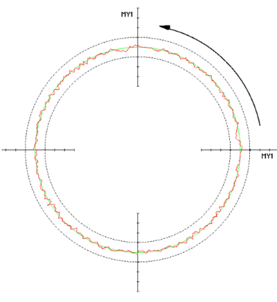

Introduction
This example describes how the friction compensation of a linear axis can be reduced depending on the position and direction of rotation of the rotary axis.
Precondition
Set the following axis machine data to adapt the friction compensation value for an axis:
MD32490 $MA_FRICT_COMP_MODE = 3 or 4
MD32500 $MA_FRICT_COMP_ENABLE = 1
Example
Procedure:

Circularity test
Without adaptation, the friction compensation acts on the Y-axis: | |
|  | |
Depending on the direction, reducing the amplitude of the friction compensation to 1% has an effect on the 180 degrees position: | |
 |